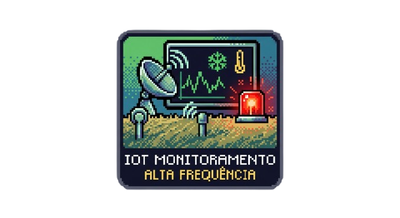

O Sistema da Firefly
Nossa plataforma vai além de um simples registro de ocorrências: atuamos como um copiloto para equipes de emergência. Unindo sensores de campo, dados de satélite e inteligência preditiva baseada em MDP, transformamos a incerteza do ambiente em recomendações de resgate claras e seguras para quem está na linha de frente.

Coleta Inteligente (IoT e Sensores)
Integração em tempo real com dispositivos IoT, sensores térmicos e drones de reconhecimento. O sistema consolida dados críticos do ambiente — como temperatura, composition de gases e visibilidade — eliminando a fragmentação de informações no momento do desastre.

Triagem Qualificada da Vítima
Cruzamento dinâmico entre o terreno da missão e as especialidades operacionais das forças de salvamento (SAMU, Bombeiros e Defesa Civil). O sistema filtra a disponibilidade e impede o envio incorreto ou o desperdício de recursos em campo.
Algoritmo de Decisão (Modelo MDP)
Aplicação prática e simplificada do Processo de Decisão de Markov. O motor matemático estrutura o ambiente de incerteza em uma tupla de Estados, Ações, Probabilidades e Recompensas, gerando recomendações lógicas sequenciais para o operador.

Monitoramento IoT de Alta Frequência
A solução recebe e processa dados de telemetria enviados por sensores de campo e térmicos a cada 10 segundos. Se qualquer limite de segurança ambiental ou climático for ultrapassado, o sistema dispara alertas visuais imediatos na tela.

Visão Global (Satélite e Clima)
Monitoramento constante das dificuldades geográficas e da meteorologia através de satélites de órbita baixa (LEO) e IA climática. Essa camada garante a previsibilidade de mudanças no tempo e mapeia o terreno para definir rotas de acesso seguras.
Pontuação e Mitigação de Erros
Cálculo instantâneo da Pontuação do Cenário combinando gravidade, tempo, clima e localização. O sistema exibe alertas visuais intuitivos e aplica penalidades simuladas para escolhas incoerentes, blindando a equipe e reduzindo o erro humano.
COMO FUNCIONA A DINAMICA DA FIREFLY ?
A cada novo chamado, o algoritmo inicia um ciclo de processamento contínuo. Suas decisões em tempo real alimentam o motor de análise preditiva:
Análise do Cenário
O sistema consolida os dados de IoT, clima, geolocalização e triagem das vítimas.
Recomendação (MDP)
O algoritmo processa a incerteza e indica em tempo real a ação de resgate ideal.
Métricas e Evolução
Cada decisão gera uma pontuação e atualiza a taxa de acerto e o histórico da missão.